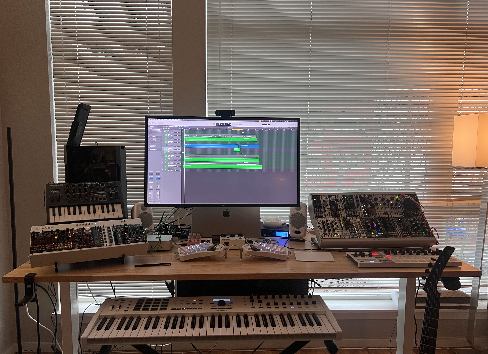
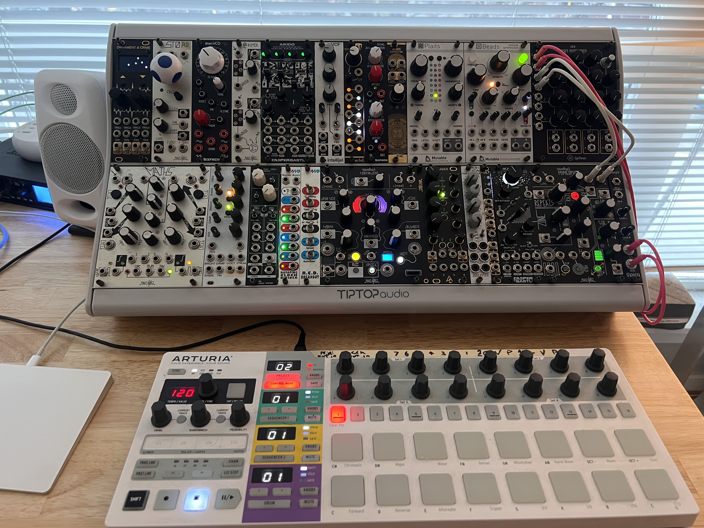
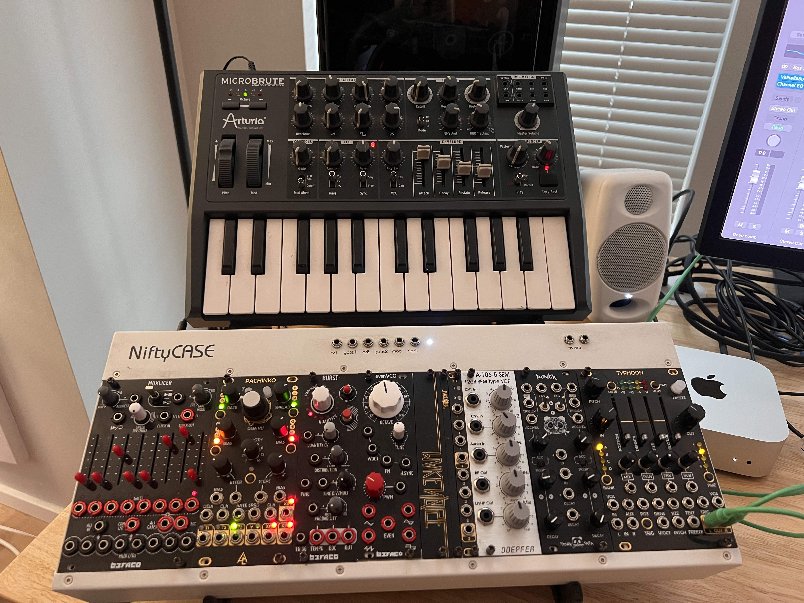
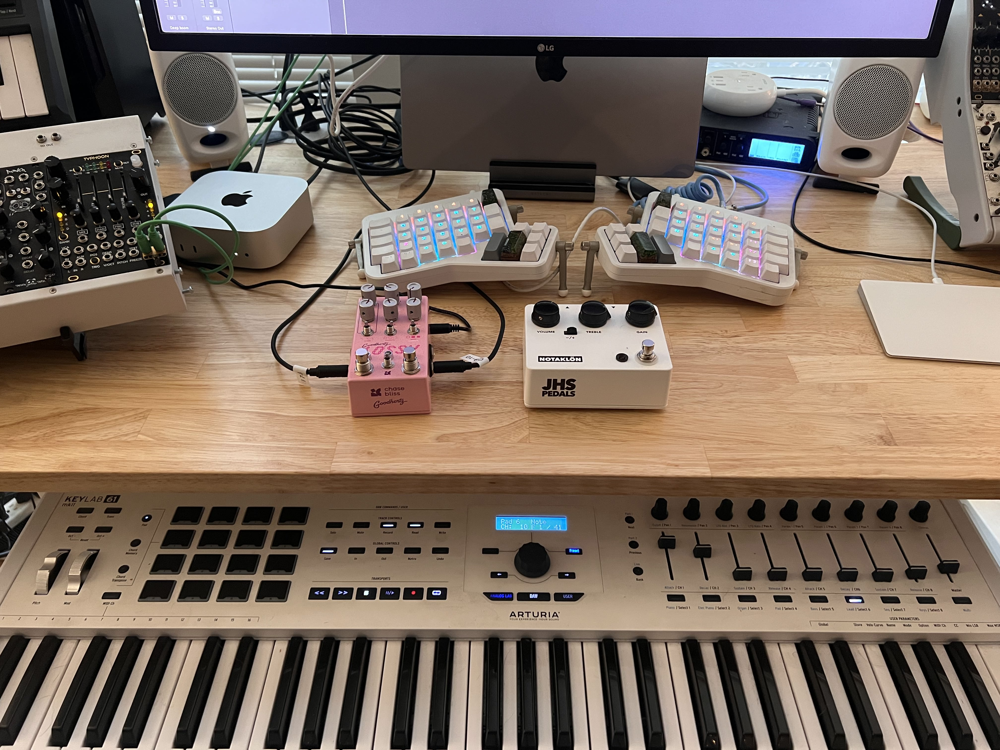

Leo's music gear problem!
A few pictures of my uncharacteristically clean desk, and a list of all the stuff




×

Gear list:
Modular
- Make Noise
- STO
- Mod Demix
- Even VCO
- Maths
- Morphagene
- Mimeophon
- After Later Audio
- Pachinko (Marbles clone)
- Typhoon (Clouds clone)
- Ornament and crime
- Auris (Ears clone)
- nRings (Rings clone)
- Rainier (Peaks clone)
- 3:1 unity mixer
- 1:3 buffered mult
- Befaco
- Muxlicer
- Burst
- Even Vco (x2)
- Attenuverter
- Chopping Kinky
- Muxlicer
- Doepfer
- A-106-5 SEM VCF
- A-120 24db VCF
- A-138-s stereo mixer
- A-130-2 VCA
- Bastl
- Aikido
- Ikarie
- Mutable Instruments
- Beads
- Plaits
- One-offs:
- Punch - Patching Panda
- uVCF - Intellijel
- Ochd - Instruo
- A1018 Stero Mixer - A1 synthesis
- Dual S&H+ - Addac systems
- RCD + expander - 4ms
- Pico input - Erica synths
Other hardware
- Arturia
- Keylab 61 MK2
- Beatstep Pro
- MicroBrute
- Misc
- Lossy - Chase Bliss
- Notaklon - JHS
- Parker Fly Deluxe
- Royer r-101 ribbon mic
- MOTU Ultralite Mk4